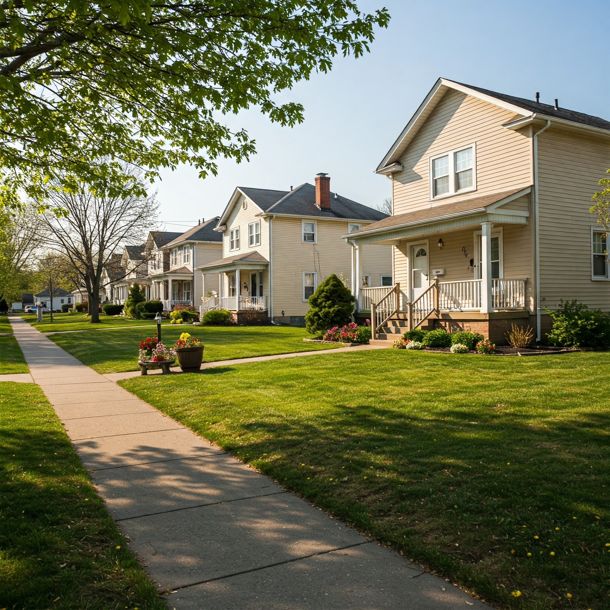

Living in Fortville
Fortville offers a welcoming community with a high quality of life. Here's some key information for residents and those considering a move to our town.
Schools
Fortville, part of the renowned Hancock County School District, boasts eight elementary schools, four middle schools, and four high schools. In 2016, New Palestine Early College High School was established to provide students with the opportunity to earn a degree or certificate while still in school. This innovative program empowers students to take a step towards higher education by providing them with a head start and allowing them to experience college life firsthand. Moreover, it equips students with the necessary skills and knowledge to excel in college and ultimately increases their chances of graduation. For more detailed information, visit the school district website.
Housing
The housing market in Fortville offers a diverse range of options, from historic homes to new developments. Whether you prefer an apartment, house, townhouse, or a house in the county-side, Fortville has something to suit your preferences. The rental prices in the city are market-rate, making it an affordable place to live. Additionally, Fortville boasts a safe community and a community that looks out for each other.
| Home | Apartment | Town-Home | Country-side |
|---|---|---|---|
| $1,900 | $1,150 | $980 | $3500 |
| 3 bed, 2 bath | 1 bed, 1 bath | 2 bed, 1.5 bath | 4 bed, 3 bath, 2 acres |
Parks and Recreation
Fortville offers a variety of parks and recreational facilities that cater to residents’ outdoor interests. Falls Parks is a popular spot for hanging out with friends or kids, providing a fun-filled experience. They have a waterfall and a large playground for the kids to enjoy. Additionally, there’s an area for fishing, where you can catch some impressive fish. During the summer, the town hosts a carnival that brings rides, games, and delicious food to the area.
Community Services
Fortville is committed to providing its residents with essential services that contribute to a high quality of life. These include a well-equipped public library, reliable water and sewer utilities, efficient weekly trash and recycling collection, and a dedicated police and fire department ensuring public safety.